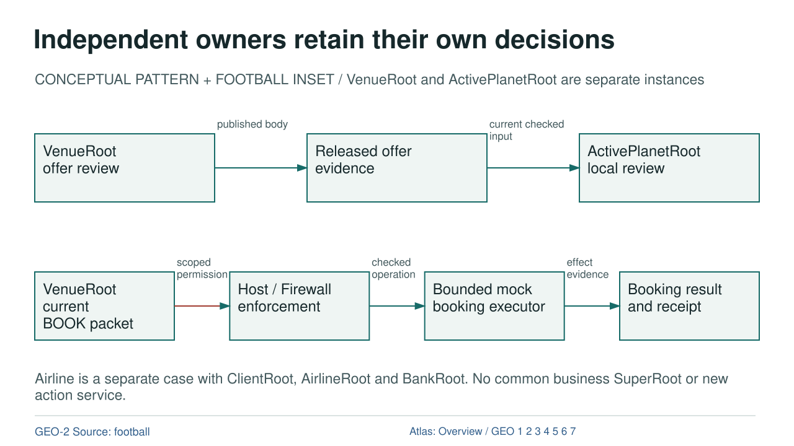

Independent owners retain their own decisions

Diagram text equivalent
- Independent owners retain their own decisions
- CONCEPTUAL PATTERN + FOOTBALL INSET / VenueRoot and ActivePlanetRoot are separate instances
- VENUE: VenueRoot offer review
- VenueRoot offer review
- B: Released offer evidence
- Released offer evidence
- REQUESTER: ActivePlanetRoot local review
- ActivePlanetRoot local review
- DATA: published body
- published body
- DATA: current checked input
- current checked input
- PACKET: VenueRoot current BOOK packet
- VenueRoot current BOOK packet
- FIREWALL: Host / Firewall enforcement
- Host / Firewall enforcement
- EXECUTOR: Bounded mock booking executor
- Bounded mock booking executor
- RECEIPT: Booking result and receipt
- Booking result and receipt
- PERMISSION: scoped permission
- scoped permission
- EXECUTION: checked operation
- checked operation
- DATA: effect evidence
- effect evidence
- Airline is a separate case with ClientRoot, AirlineRoot and BankRoot. No common business SuperRoot or new action service.
- rule
- GEO-2 Source: football
- Atlas: Overview / GEO 1 2 3 4 5 6 7
CONCEPTUAL PATTERN + FOOTBALL INSET / VenueRoot and ActivePlanetRoot are separate instances
OVERVIEW | GEO-1 | GEO-2 | GEO-3 | GEO-4 | GEO-5 | GEO-6 | GEO-7
Text Equivalent
Independent owners retain their own decisions
CONCEPTUAL PATTERN + FOOTBALL INSET / VenueRoot and ActivePlanetRoot are separate instances
VenueRoot offer review
Released offer evidence
ActivePlanetRoot local review
published body
current checked input
VenueRoot current BOOK packet
Host / Firewall enforcement
Bounded mock booking executor
Booking result and receipt
scoped permission
checked operation
effect evidence
Airline is a separate case with ClientRoot, AirlineRoot and BankRoot. No common business SuperRoot or new action service.
GEO-2 Source: football
Atlas: Overview / GEO 1 2 3 4 5 6 7
Exact Relations
- VENUE to B: DATA, published body.
- B to REQUESTER: DATA, current checked input.
- PACKET to FIREWALL: PERMISSION, scoped permission.
- FIREWALL to EXECUTOR: EXECUTION, checked operation.
- EXECUTOR to RECEIPT: DATA, effect evidence.
Sources and Boundary
Colour is supplementary. Relation labels state what crosses each edge. Editorial ordering does not establish new runtime authority.